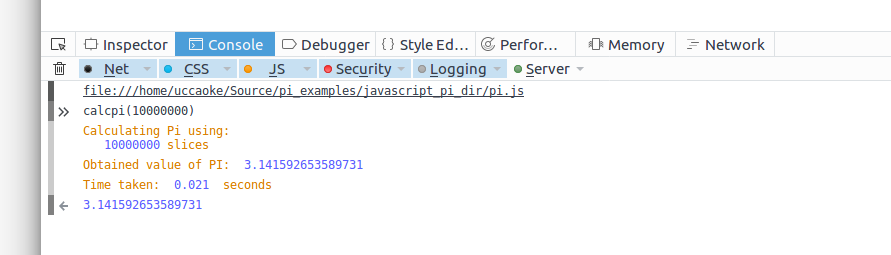
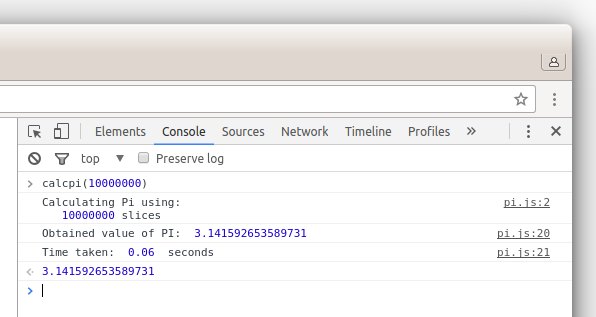

Go to Tools -> Web Developer -> Web Console (or press CTRL-Shift-K) and enter calcpi(number of slices) at the prompt at the bottom of the screen.
Go to Tools -> JavaScript Console (or press CTRL-Shift-J) and enter calcpi(number of slices) at the prompt to the right of the screen.
